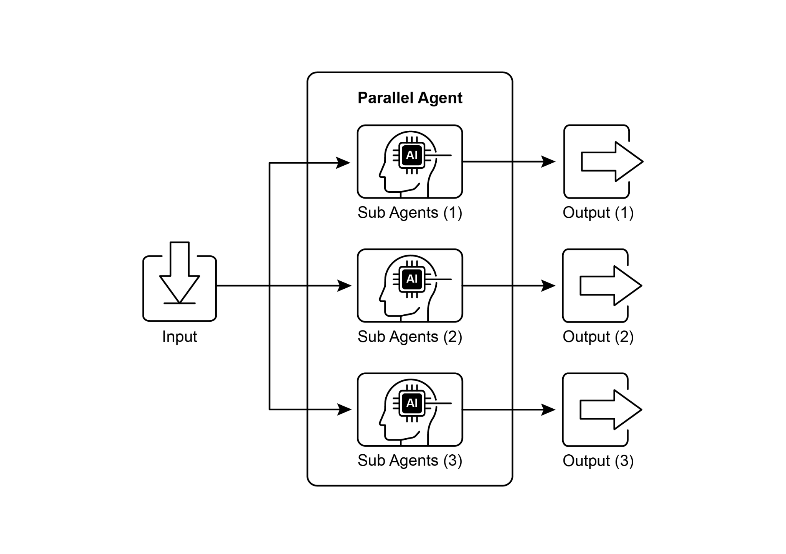
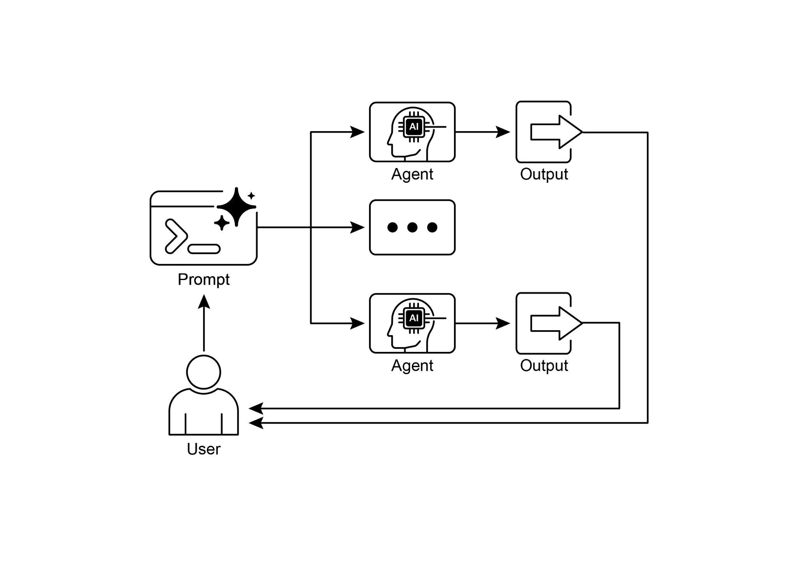

读书 · Agentic Design Patterns · 中英对照
第 3 章 · 并行化 Parallelization
Chapter 3: Parallelization · 《Agentic Design Patterns》 · Antonio Gulli · 2025
讲解如何并发执行无依赖的LLM调用、工具与子代理，以缩短任务总耗时。
← 返回导读 原书 PDF 上一章:第2章 下一章:第4章
本章要点
① 识别无依赖的子任务，并发执行以降低整体延迟 ① 适用于多源检索、多API调用、多模态处理等场景 ① LangChain用RunnableParallel，ADK用ParallelAgent实现 ① 并发会带来设计、调试与日志的复杂度与成本
本章一图流
拆分任务找出彼此无依赖的子任务→并发执行多路同时调用，压缩总耗时→框架落地RunnableParallel 或 ParallelAgent→承担代价调试与日志复杂度上升
先拆出无依赖子任务再并发执行，用框架落地，同时接受复杂度成本。
原书插图


本章划线句
划线句(逐字校验)
"The core idea is to identify parts of the workflow that do not depend on the output of other parts and execute them in parallel."
为什么值得划线:点明并行化的判断标准：无依赖即可并发
划线句(逐字校验)
"Note that asyncio provides concurrency, not parallelism."
为什么值得划线:澄清并发与并行的区别，避免误解
划线句(逐字校验)
"Parallelization is a pattern for executing independent tasks concurrently to improve efficiency."
为什么值得划线:一句话概括本章核心定义
正文(英中对照)
"Chapter 3: Parallelization Parallelization Pattern Overview In the previous chapters, we've explored Prompt Chaining for sequential workflows and Routing for dynamic decision-making and transitions between different paths. While these patterns are essential, many complex agentic tasks involve multiple sub-tasks that can be executed simultaneously rather than one after another. This is where the Parallelization pattern becomes crucial. Parallelization involves executing multiple components, such as LLM calls, tool usages, or even entire sub-agents, concurrently (see Fig.1)."
第3章：并行化 并行化模式概述 在前面的章节中，我们探讨了用于顺序工作流的 Prompt Chaining（提示链）以及用于动态决策和不同路径间转换的 Routing（路由）。尽管这些模式至关重要，但许多复杂的智能体任务涉及多个可以同时执行而非依次执行的子任务。这正是 Parallelization（并行化）模式变得关键之处。并行化涉及并发执行多个组件，例如 LLM 调用、工具使用，甚至整个子智能体（见图1）。
导读注:引出并行化模式：多个子任务可同时执行，而非串行。
"Instead of waiting for one step to complete before starting the next, parallel execution allows independent tasks to run at the same time, significantly reducing the overall execution time for tasks that can be broken down into independent parts. Consider an agent designed to research a topic and summarize its findings. A sequential approach might: 1. Search for Source A. 2. Summarize Source A. 3. Search for Source B. 4. Summarize Source B. 5. Synthesize a final answer from summaries A and B. A parallel approach could instead: 1. Search for Source A and Search for Source B simultaneously. 2. Once both searches are complete, Summarize Source A and Summarize Source B simultaneously. 3."
与其等待一步完成后再开始下一步，并行执行允许独立任务同时运行，对于可分解为独立部分的任务，能显著减少整体执行时间。设想一个旨在研究某个主题并总结其发现的 agent（智能体）。顺序式方法可能是：1. 搜索来源 A。2. 总结来源 A。3. 搜索来源 B。4. 总结来源 B。5. 根据摘要 A 和 B 综合出最终答案。而并行式方法则可以是：1. 同时搜索来源 A 和搜索来源 B。2. 两个搜索都完成后，同时总结来源 A 和总结来源 B。3.
导读注:并行执行把串行五步压缩为三步，直观展示独立任务同时运行带来的时间收益。
"Synthesize a final answer from summaries A and B (this step is typically sequential, waiting for the parallel steps to finish). The core idea is to identify parts of the workflow that do not depend on the output of other parts and execute them in parallel. This is particularly effective when dealing with external services (like APIs or databases) that have latency, as you can issue multiple requests concurrently. Implementing parallelization often requires frameworks that support asynchronous execution or multi-threading/multi-processing. Modern agentic frameworks are 1 designed with asynchronous operations in mind, allowing you to easily define steps that can run in parallel. Fig.1."
从摘要 A 和 B 合成最终答案（这一步通常是顺序执行的，需等待并行步骤完成）。核心思想是识别工作流中不依赖其他部分输出的部分，并并行执行它们。当处理具有延迟的外部服务（如 API 或数据库）时，这尤其有效，因为你可以并发地发出多个请求。实现并行化通常需要支持异步执行或多线程/多进程的框架。现代 agentic 框架在设计时就考虑了异步操作，使你能够轻松定义可以并行运行的步骤。图 1。
导读注:核心是识别无依赖步骤并行执行，尤其适合有延迟的外部服务。
"Example of parallelization with sub-agents Frameworks like LangChain, LangGraph, and Google ADK provide mechanisms for parallel execution. In LangChain Expression Language (LCEL), you can achieve parallel execution by combining runnable objects using operators like | (for sequential) and by structuring your chains or graphs to have branches that execute concurrently. LangGraph, with its graph structure, allows you to define multiple nodes that can be executed from a single state transition, effectively enabling parallel branches in the workflow. Google ADK provides robust, native mechanisms to facilitate and manage the parallel execution of agents, significantly enhancing the efficiency and scalability of complex, multi-agent systems."
使用子代理（sub-agents）实现并行化的示例：LangChain、LangGraph 和 Google ADK 等框架提供了并行执行的机制。在 LangChain Expression Language（LCEL）中，你可以通过使用 |（用于顺序执行）等运算符组合可运行对象（runnable objects），并通过将链或图结构设计为具有并发执行的分支，来实现并行执行。LangGraph 凭借其图结构，允许你定义多个可从单次状态转换（state transition）执行的节点，从而有效启用工作流中的并行分支。Google ADK 提供了健壮的、原生的机制来促进和管理代理的并行执行，显著提升了复杂多代理系统的效率和可扩展性。
导读注:对比三大框架的并行机制，LangGraph 单次状态转换触发多节点最值得注意。
"This inherent capability within the ADK framework allows developers to design and implement solutions where multiple agents can operate concurrently, rather than sequentially. 2 The Parallelization pattern is vital for improving the efficiency and responsiveness of agentic systems, especially when dealing with tasks that involve multiple independent lookups, computations, or interactions with external services. It's a key technique for optimizing the performance of complex agent workflows. Practical Applications & Use Cases Parallelization is a powerful pattern for optimizing agent performance across various applications: 1."
ADK 框架内的这一固有能力使开发者能够设计和实现多个 agent 并发运行（而非顺序运行）的解决方案。2 并行化（Parallelization）模式对于提升 agentic 系统的效率与响应性至关重要，尤其是在处理涉及多个独立查询、计算或与外部服务交互的任务时。它是优化复杂 agent 工作流性能的关键技术。实际应用与用例 并行化是跨多种应用优化 agent 性能的强大模式：1.
导读注:点明并行化是提升 agentic 系统效率与响应性的关键技术。
"Information Gathering and Research: Collecting information from multiple sources simultaneously is a classic use case. ● Use Case: An agent researching a company. ○ Parallel Tasks: Search news articles, pull stock data, check social media mentions, and query a company database, all at the same time. ○ Benefit: Gathers a comprehensive view much faster than sequential lookups. 2."
信息收集与研究：同时从多个来源收集信息是一个经典用例。● 用例：一个研究某家公司的 agent（智能体）。○ 并行任务：同时搜索新闻文章、拉取股票数据、查看社交媒体提及，并查询公司数据库。○ 优势：比顺序查找快得多地获得全面视图。2.
导读注:展示 agent 并行多源检索的典型场景，并行任务是效率关键。
"Data Processing and Analysis: Applying different analysis techniques or processing different data segments concurrently. ● Use Case: An agent analyzing customer feedback. ○ Parallel Tasks: Run sentiment analysis, extract keywords, categorize feedback, and identify urgent issues simultaneously across a batch of feedback entries. ○ Benefit: Provides a multi-faceted analysis quickly. 3."
数据处理与分析：同时应用不同的分析技术或处理不同的数据片段。● 用例：一个分析客户反馈的 agent（智能体）。○ 并行任务：在一批反馈条目上同时运行情感分析、提取关键词、对反馈进行分类以及识别紧急问题。○ 收益：快速提供多方面的分析。3.
导读注:展示并行处理在客户反馈分析中的多任务同时执行优势。
"Multi-API or Tool Interaction: Calling multiple independent APIs or tools to gather different types of information or perform different actions. ● Use Case: A travel planning agent. ○ Parallel Tasks: Check flight prices, search for hotel availability, look up local events, and find restaurant recommendations concurrently. ○ Benefit: Presents a complete travel plan faster. 4. Content Generation with Multiple Components: Generating different parts of a complex piece of content in parallel. ● Use Case: An agent creating a marketing email. ○ Parallel Tasks: Generate a subject line, draft the email body, find a relevant image, and create a call-to-action button text simultaneously. ○ Benefit: Assembles the final email more efficiently. 5."
多 API 或工具交互(Multi-API or Tool Interaction):调用多个独立的 API 或工具,以收集不同类型的信息或执行不同的操作。● 用例:旅行规划 agent。○ 并行任务:同时查询航班价格、搜索酒店空房、查找当地活动,并获取餐厅推荐。○ 优势:更快地呈现完整的旅行计划。4. 多组件内容生成(Content Generation with Multiple Components):并行生成复杂内容的各个部分。● 用例:创建营销邮件的 agent。○ 并行任务:同时生成主题行、起草邮件正文、查找相关图片,并创建行动号召按钮文案。○ 优势:更高效地组装最终邮件。5.
导读注:展示并行调用多工具与多组件生成的两类典型场景,并行提速是核心价值。
"Validation and Verification: 3 Performing multiple independent checks or validations concurrently. ● Use Case: An agent verifying user input. ○ Parallel Tasks: Check email format, validate phone number, verify address against a database, and check for profanity simultaneously. ○ Benefit: Provides faster feedback on input validity. 6. Multi-Modal Processing: Processing different modalities (text, image, audio) of the same input concurrently. ● Use Case: An agent analyzing a social media post with text and an image. ○ Parallel Tasks: Analyze the text for sentiment and keywords and analyze the image for objects and scene description simultaneously. ○ Benefit: Integrates insights from different modalities more quickly. 7."
验证与确认（Validation and Verification）：并发执行多个独立的检查或验证。● 用例：一个 agent 验证用户输入。○ 并行任务：同时检查邮箱格式、验证电话号码、对照数据库验证地址，并检查是否包含脏话。○ 优势：更快地反馈输入有效性。6. 多模态处理（Multi-Modal Processing）：并发处理同一输入的不同模态（文本、图像、音频）。● 用例：一个 agent 分析一条包含文本和图像的社交媒体帖子。○ 并行任务：同时分析文本的情感与关键词，并分析图像中的物体与场景描述。○ 优势：更快地整合来自不同模态的洞察。7.
导读注:展示并发验证与多模态并行处理如何加速反馈与洞察整合。
"A/B Testing or Multiple Options Generation: Generating multiple variations of a response or output in parallel to select the best one. ● Use Case: An agent generating different creative text options. ○ Parallel Tasks: Generate three different headlines for an article simultaneously using slightly different prompts or models. ○ Benefit: Allows for quick comparison and selection of the best option. Parallelization is a fundamental optimization technique in agentic design, allowing developers to build more performant and responsive applications by leveraging concurrent execution for independent tasks. Hands-On Code Example (LangChain) Parallel execution within the LangChain framework is facilitated by the LangChain Expression Language (LCEL)."
A/B 测试或多选项生成:并行生成响应或输出的多个变体,以选出最佳的一个。● 用例:一个 agent 生成不同的创意文本选项。○ 并行任务:使用略有不同的 prompt 或模型,同时为一篇文章生成三个不同的标题。○ 收益:可以快速比较并选出最佳选项。并行化是 agentic 设计中的一项基础优化技术,让开发者能够通过对独立任务采用并发执行,构建性能更强、响应更快的应用。动手代码示例(LangChain):LangChain 框架内的并行执行由 LangChain 表达式语言(LCEL)提供支持。
导读注:并行化是 agentic 设计的基础优化手段,可借多选项生成与并发执行提升性能。
"The primary method involves structuring multiple runnable components within a dictionary or list construct. When this collection is passed as input to a subsequent component in the chain, the LCEL runtime executes the contained runnables concurrently. In the context of LangGraph, this principle is applied to the graph's topology. Parallel workflows are defined by architecting the graph such that multiple nodes, lacking direct sequential dependencies, can be initiated from a single common node. These parallel pathways execute independently before their results can be aggregated at a subsequent convergence point in the graph. The following implementation demonstrates a parallel processing workflow constructed with the LangChain framework."
主要方法是在字典或列表结构中组织多个可运行组件（runnable）。当该集合作为输入传递给链中的后续组件时，LCEL 运行时会并发执行其中包含的 runnable。在 LangGraph 的语境下，这一原理应用于图的拓扑结构。并行工作流通过这样设计图来定义：使多个没有直接顺序依赖的节点可以从同一个公共节点启动。这些并行路径独立执行，之后其结果可在图中后续的汇聚点进行聚合。以下实现展示了用 LangChain 框架构建的并行处理工作流。
导读注:要点是字典/列表即并发，LangGraph 用公共起点+汇聚点表达并行。
"This workflow is designed to execute two 4 independent operations concurrently in response to a single user query. These parallel processes are instantiated as distinct chains or functions, and their respective outputs are subsequently aggregated into a unified result. The prerequisites for this implementation include the installation of the requisite Python packages, such as langchain, langchain-community, and a model provider library like langchain-openai. Furthermore, a valid API key for the chosen language model must be configured in the local environment for authentication."
该工作流旨在响应单个用户查询时并发执行两个独立的操作。这些并行过程被实例化为不同的链或函数，其各自的输出随后被聚合为一个统一结果。实现此方案的前提条件包括安装必需的 Python 包，如 langchain、langchain-community 以及模型提供方库（如 langchain-openai）。此外，必须在本地环境中配置所选语言模型的有效 API key 以进行身份验证。
导读注:核心是单查询触发双操作并发，再聚合输出，需先装包并配好 API key。
python
import os
import asyncio
from typing import Optionalpython
from langchain_openai import ChatOpenAI
from langchain_core.prompts import ChatPromptTemplate
from langchain_core.output_parsers import StrOutputParser
from langchain_core.runnables import Runnable, RunnableParallel,
RunnablePassthroughpython
# --- Configuration -- # Ensure your API key environment variable is set (e.g.,
OPENAI_API_KEY)
try:
llm: Optional[ChatOpenAI] = ChatOpenAI(model="gpt-4o-mini",
temperature=0.7)python
except Exception as e:
print(f"Error initializing language model: {e}")
llm = None"# --- Define Independent Chains -- # These three chains represent distinct tasks that can be executed in parallel. summarize_chain: Runnable = ( ChatPromptTemplate.from_messages([ ("system", "Summarize the following topic concisely:"), ("user", "{topic}") ]) | llm | StrOutputParser() ) questions_chain: Runnable = ( ChatPromptTemplate.from_messages([ 5 ("system", "Generate three interesting questions about the following topic:"), ("user", "{topic}") ]) | llm | StrOutputParser() ) terms_chain: Runnable = ( ChatPromptTemplate.from_messages([ ("system", "Identify 5-10 key terms from the following topic, separated by commas:"), ("user", "{topic}") ]) | llm | StrOutputParser() ) # --- Build the Parallel + Synthesis Chain -- # 1."
# --- 定义独立链 -- # 这三条链代表可并行执行的不同任务。
summarize_chain: Runnable = (
ChatPromptTemplate.from_messages([
("system", "简要总结以下主题："),
("user", "{topic}")
])
| llm
| StrOutputParser()
)
questions_chain: Runnable = (
ChatPromptTemplate.from_messages([
5 ("system", "针对以下主题生成三个有趣的问题："),
("user", "{topic}")
])
| llm
| StrOutputParser()
)
terms_chain: Runnable = (
ChatPromptTemplate.from_messages([
("system", "从以下主题中找出 5-10 个关键术语，用逗号分隔："),
("user", "{topic}")
])
| llm
| StrOutputParser()
)
# --- 构建并行 + 合成链 -- #
# 1.
导读注:展示用 Runnable 定义三条可并行链，是并行+合成模式的基础。
"Define the block of tasks to run in parallel. The results of these, # along with the original topic, will be fed into the next step. map_chain = RunnableParallel( { "summary": summarize_chain, "questions": questions_chain, "key_terms": terms_chain, "topic": RunnablePassthrough(), # Pass the original topic through } ) # 2. Define the final synthesis prompt which will combine the parallel results. synthesis_prompt = ChatPromptTemplate.from_messages([ ("system", """Based on the following information: Summary: {summary} Related Questions: {questions} Key Terms: {key_terms} Synthesize a comprehensive answer."""), ("user", "Original topic: {topic}") ]) # 3."
定义要并行运行的任务块。这些任务的结果，连同原始主题，将被送入下一步。map_chain = RunnableParallel( { "summary": summarize_chain, "questions": questions_chain, "key_terms": terms_chain, "topic": RunnablePassthrough(), # 传递原始主题 } ) # 2. 定义最终的合成 prompt，它将合并并行结果。synthesis_prompt = ChatPromptTemplate.from_messages([ ("system", """基于以下信息：摘要：{summary} 相关问题：{questions} 关键术语：{key_terms} 综合出一个全面的答案。"""), ("user", "原始主题：{topic}") ]) # 3.
导读注:展示用 RunnableParallel 并行跑多个链，再汇总结果做最终合成。
"Construct the full chain by piping the parallel results directly # into the synthesis prompt, followed by the LLM and output parser. 6"
通过将并行结果直接管道传输到合成 prompt 中，随后接上 LLM 和输出解析器，来构建完整链条。6
导读注:展示如何用管道串联并行结果、合成 prompt、LLM 与解析器。
text
full_parallel_chain = map_chain | synthesis_prompt | llm |
StrOutputParser()"# --- Run the Chain -- async def run_parallel_example(topic: str) -> None: """ Asynchronously invokes the parallel processing chain with a specific topic and prints the synthesized result. Args: topic: The input topic to be processed by the LangChain chains. """ if not llm: print("LLM not initialized. Cannot run example.") return"
# --- 运行链 --
async def run_parallel_example(topic: str) -> None:
"""
使用特定主题异步调用并行处理链，并打印合成结果。
参数：
topic: 由 LangChain 链处理的输入主题。
"""
if not llm:
print("LLM 未初始化。无法运行示例。")
return
导读注:展示异步并行链的入口函数，注意 LLM 未初始化时的提前返回。
python
print(f"\n--- Running Parallel LangChain Example for Topic:
'{topic}' ---")
try:
# The input to `ainvoke` is the single 'topic' string,
# then passed to each runnable in the `map_chain`.
response = await full_parallel_chain.ainvoke(topic)
print("\n--- Final Response ---")
print(response)
except Exception as e:
print(f"\nAn error occurred during chain execution: {e}")"if __name__ == "__main__": test_topic = "The history of space exploration" # In Python 3.7+, asyncio.run is the standard way to run an async function. asyncio.run(run_parallel_example(test_topic)) The provided Python code implements a LangChain application designed for processing a given topic efficiently by leveraging parallel execution. Note that asyncio provides concurrency, not parallelism. It achieves this on a single thread by using an event loop that intelligently switches between tasks when one is idle (e.g., waiting for a network request)."
if __name__ == "__main__":
test_topic = "The history of space exploration"
# 在 Python 3.7+ 中，asyncio.run 是运行异步函数的标准方式。
asyncio.run(run_parallel_example(test_topic))
提供的 Python 代码实现了一个 LangChain 应用，旨在通过利用并行执行来高效处理给定主题。注意，asyncio 提供的是并发（concurrency），而非并行（parallelism）。它通过使用事件循环在单线程上实现这一点，当一个任务空闲时（例如等待网络请求），事件循环会智能地在任务之间切换。
导读注:强调 asyncio 是并发而非并行，避免混淆概念。
"This creates the effect of multiple tasks progressing at once, but the code itself is still being executed by only one thread, constrained by Python's Global Interpreter Lock (GIL). 7 The code begins by importing essential modules from langchain_openai and langchain_core, including components for language models, prompts, output parsing, and runnable structures. The code attempts to initialize a ChatOpenAI instance, specifically using the "gpt-4o-mini" model, with a specified temperature for controlling creativity. A try-except block is used for robustness during the language model initialization. Three independent LangChain "chains" are then defined, each designed to perform a distinct task on the input topic."
这造成了多个任务同时推进的效果，但代码本身仍只由一个线程执行，并受 Python 全局解释器锁（Global Interpreter Lock, GIL）的约束。7 代码首先从 langchain_openai 和 langchain_core 导入必要模块，包括语言模型、prompt、输出解析和可运行结构等组件。代码尝试初始化一个 ChatOpenAI 实例，具体使用 "gpt-4o-mini" 模型，并指定 temperature 以控制创造性。为增强健壮性，语言模型初始化过程使用了 try-except 块。随后定义了三个独立的 LangChain "chains"，每个都设计用于对输入主题执行一项不同的任务。
导读注:揭示并发假象：多任务推进仍受 GIL 限制，实为单线程执行。
"The first chain is for summarizing the topic concisely, using a system message and a user message containing the topic placeholder. The second chain is configured to generate three interesting questions related to the topic. The third chain is set up to identify between 5 and 10 key terms from the input topic, requesting them to be comma-separated. Each of these independent chains consists of a ChatPromptTemplate tailored to its specific task, followed by the initialized language model and a StrOutputParser to format the output as a string. A RunnableParallel block is then constructed to bundle these three chains, allowing them to execute simultaneously."
第一条链用于简洁地总结主题，使用一条 system 消息和一条包含主题占位符的 user 消息。第二条链配置为生成与该主题相关的三个有趣问题。第三条链设置为从输入主题中识别 5 到 10 个关键术语，并要求以逗号分隔。这些独立链中的每一条都由针对其特定任务定制的 ChatPromptTemplate、初始化后的语言模型以及用于将输出格式化为字符串的 StrOutputParser 组成。随后构建一个 RunnableParallel 块来捆绑这三条链，使它们能够同时执行。
导读注:三条独立链各司其职，再用 RunnableParallel 并行执行，是组合式 LLM 流水线的典型写法。
"This parallel runnable also includes a RunnablePassthrough to ensure the original input topic is available for subsequent steps. A separate ChatPromptTemplate is defined for the final synthesis step, taking the summary, questions, key terms, and the original topic as input to generate a comprehensive answer. The full end-to-end processing chain, named full_parallel_chain, is created by sequencing the map_chain (the parallel block) into the synthesis prompt, followed by the language model and the output parser. An asynchronous function run_parallel_example is provided to demonstrate how to invoke this full_parallel_chain. This function takes the topic as input and uses invoke to run the asynchronous chain."
这个可并行运行的结构还包含一个 RunnablePassthrough，以确保原始输入主题可供后续步骤使用。为最终综合步骤定义了一个单独的 ChatPromptTemplate（聊天提示模板），它接收摘要、问题、关键术语和原始主题作为输入，以生成一个全面的答案。完整的端到端处理链名为 full_parallel_chain，其创建方式是将 map_chain（并行块）接入综合提示，随后接语言模型和输出解析器。提供了一个异步函数 run_parallel_example，用于演示如何调用这个 full_parallel_chain。该函数接收主题作为输入，并使用 invoke 来运行异步链。
导读注:展示如何用 RunnablePassthrough 保留原始主题并串联并行链与综合步骤。
"Finally, the standard Python if __name__ == "__main__": block shows how to execute the run_parallel_example with a sample topic, in this case, "The history of space exploration", using asyncio.run to manage the asynchronous execution. In essence, this code sets up a workflow where multiple LLM calls (for summarizing, questions, and terms) happen at the same time for a given topic, and their results are then combined by a final LLM call. This showcases the core idea of parallelization in an agentic workflow using LangChain. Hands-On Code Example (Google ADK) Okay, let's now turn our attention to a concrete example illustrating these concepts within the Google ADK framework."
最后，标准的 Python `if __name__ == "__main__":` 代码块展示了如何用一个示例主题执行 run_parallel_example，本例中主题为 "The history of space exploration"，并使用 asyncio.run 来管理异步执行。本质上，这段代码建立了一个工作流：针对给定主题，多个 LLM 调用（用于摘要、问题和术语）同时发生，然后由最后一次 LLM 调用合并它们的结果。这展示了使用 LangChain 在 agentic 工作流中实现并行化的核心思想。动手代码示例（Google ADK）好的，现在让我们把注意力转向一个具体示例，在 Google ADK 框架内说明这些概念。
导读注:展示 LangChain 中多路 LLM 调用并行执行再汇总的并行化模式。
"We'll examine how the ADK primitives, such as 8 ParallelAgent and SequentialAgent, can be applied to build an agent flow that leverages concurrent execution for improved efficiency."
我们将考察如何应用 ADK 原语（primitives），例如 8 ParallelAgent 和 SequentialAgent，来构建一个利用并发执行以提升效率的 agent 流程。
导读注:重点在于用 ParallelAgent 与 SequentialAgent 组合出并发高效的 agent 流程。
python
from google.adk.agents import LlmAgent, ParallelAgent,
SequentialAgent
from google.adk.tools import google_search
GEMINI_MODEL="gemini-2.0-flash""# --- 1. Define Researcher Sub-Agents (to run in parallel) -- # Researcher 1: Renewable Energy researcher_agent_1 = LlmAgent( name="RenewableEnergyResearcher", model=GEMINI_MODEL, instruction="""You are an AI Research Assistant specializing in energy. Research the latest advancements in 'renewable energy sources'. Use the Google Search tool provided. Summarize your key findings concisely (1-2 sentences). Output *only* the summary."
# --- 1. 定义研究员子代理（并行运行）-- # 研究员 1：可再生能源 researcher_agent_1 = LlmAgent( name="RenewableEnergyResearcher", model=GEMINI_MODEL, instruction="""你是一名专注于能源领域的 AI 研究助理。研究“可再生能源”的最新进展。使用所提供的 Google Search 工具。简明扼要地总结你的关键发现（1-2 句）。*仅*输出摘要。
导读注:展示如何用 LlmAgent 定义并行子代理，instruction 只要求输出摘要。
"""", description="Researches renewable energy sources.", tools=[google_search], # Store result in state for the merger agent output_key="renewable_energy_result" ) # Researcher 2: Electric Vehicles researcher_agent_2 = LlmAgent( name="EVResearcher", model=GEMINI_MODEL, instruction="""You are an AI Research Assistant specializing in transportation. Research the latest developments in 'electric vehicle technology'. Use the Google Search tool provided. Summarize your key findings concisely (1-2 sentences). Output *only* the summary."
研究可再生能源。", tools=[google_search], # 将结果存入 state 供合并 agent 使用 output_key="renewable_energy_result" ) # 研究员 2：电动汽车 researcher_agent_2 = LlmAgent( name="EVResearcher", model=GEMINI_MODEL, instruction="""你是专攻交通领域的 AI 研究助理。研究“电动汽车技术”（electric vehicle technology）的最新进展。使用提供的 Google Search 工具。用 1-2 句话简明总结你的关键发现。*仅*输出摘要。
导读注:展示多 agent 编排：两个研究员各用 output_key 存结果供合并。
"""", description="Researches electric vehicle technology.", tools=[google_search], # Store result in state for the merger agent output_key="ev_technology_result" ) # Researcher 3: Carbon Capture researcher_agent_3 = LlmAgent( 9 name="CarbonCaptureResearcher", model=GEMINI_MODEL, instruction="""You are an AI Research Assistant specializing in climate solutions. Research the current state of 'carbon capture methods'. Use the Google Search tool provided. Summarize your key findings concisely (1-2 sentences). Output *only* the summary. """, description="Researches carbon capture methods.", tools=[google_search], # Store result in state for the merger agent output_key="carbon_capture_result" ) # --- 2."
研究电动汽车技术。", tools=[google_search], # 将结果存入状态供合并 agent 使用 output_key="ev_technology_result" ) # 研究员 3：碳捕集 researcher_agent_3 = LlmAgent( 9 name="CarbonCaptureResearcher", model=GEMINI_MODEL, instruction="""你是一名专注于气候解决方案的 AI 研究助理。研究“碳捕集方法”（carbon capture methods）的当前状况。使用提供的 Google Search 工具。简明扼要地总结你的关键发现（1-2 句）。仅输出摘要。""", description="研究碳捕集方法。", tools=[google_search], # 将结果存入状态供合并 agent 使用 output_key="carbon_capture_result" ) # --- 2.
导读注:代码片段展示多 agent 研究流水线：各研究员用 output_key 把结果存入共享状态供合并。
"Create the ParallelAgent (Runs researchers concurrently) --# This agent orchestrates the concurrent execution of the researchers. # It finishes once all researchers have completed and stored their results in state. parallel_research_agent = ParallelAgent( name="ParallelWebResearchAgent", sub_agents=[researcher_agent_1, researcher_agent_2, researcher_agent_3], description="Runs multiple research agents in parallel to gather information." ) # --- 3."
创建 ParallelAgent（并行运行研究员）——# 该 agent 负责编排研究员的并发执行。# 它在所有研究员完成并将结果存入 state 后结束。parallel_research_agent = ParallelAgent( name="ParallelWebResearchAgent", sub_agents=[researcher_agent_1, researcher_agent_2, researcher_agent_3], description="Runs multiple research agents in parallel to gather information." ) # --- 3.
导读注:ParallelAgent 通过 sub_agents 列表并发调度多个研究员，全部完成后才结束。
"Define the Merger Agent (Runs *after* the parallel agents) --# This agent takes the results stored in the session state by the parallel agents # and synthesizes them into a single, structured response with attributions. merger_agent = LlmAgent( name="SynthesisAgent", model=GEMINI_MODEL, # Or potentially a more powerful model if needed for synthesis instruction="""You are an AI Assistant responsible for combining research findings into a structured report. Your primary task is to synthesize the following research summaries, clearly attributing findings to their source areas. Structure your response using headings for each topic."
定义合并智能体（Merger Agent，在并行智能体之后运行）——# 该智能体接收并行智能体存储在会话状态中的结果，# 并将其综合为带有归属标注的单一结构化响应。merger_agent = LlmAgent( name="SynthesisAgent", model=GEMINI_MODEL, # 或者如果需要综合，可能使用更强大的模型 instruction="""你是一个 AI 助手，负责将研究发现组合成结构化报告。你的主要任务是综合以下研究摘要，清楚地将发现归属于其来源领域。使用每个主题的标题来组织你的响应。
导读注:Merger Agent在并行智能体之后运行，负责汇总结果并标注来源。
"Ensure the report is coherent and integrates the key points smoothly. **Crucially: Your entire response MUST be grounded *exclusively* on the information provided in the 'Input Summaries' below."
确保报告连贯，并顺畅整合关键要点。至关重要：你的整个回复必须*完全*基于下方“Input Summaries”中提供的信息。
导读注:强调回复须严格限定于给定摘要，不得引入外部信息。
"Do NOT add 10 any external knowledge, facts, or details not present in these specific summaries.** **Input Summaries:** * **Renewable Energy:** {renewable_energy_result} * **Electric Vehicles:** {ev_technology_result} * **Carbon Capture:** {carbon_capture_result} **Output Format:** ## Summary of Recent Sustainable Technology Advancements ### Renewable Energy Findings (Based on RenewableEnergyResearcher's findings) [Synthesize and elaborate *only* on the renewable energy input summary provided above.] ### Electric Vehicle Findings (Based on EVResearcher's findings) [Synthesize and elaborate *only* on the EV input summary provided above.] ### Carbon Capture Findings (Based on CarbonCaptureResearcher's findings) [Synthesize and elaborate *only* on the carbon capture input summary provided above.] ### Overall Conclusion [Provide a brief (1-2 sentence) concluding statement that connects *only* the findings presented above.] Output *only* the structured report following this format."
不要添加任何外部知识、事实或细节，这些内容不得出现在这些具体摘要中。 **输入摘要：** * **可再生能源（Renewable Energy）：** {renewable_energy_result} * **电动汽车（Electric Vehicles）：** {ev_technology_result} * **碳捕集（Carbon Capture）：** {carbon_capture_result} **输出格式：** ## 近期可持续技术进展摘要 ### 可再生能源发现（基于 RenewableEnergyResearcher 的发现） [仅对上述提供的可再生能源输入摘要进行综合与阐述。] ### 电动汽车发现（基于 EVResearcher 的发现） [仅对上述提供的电动汽车输入摘要进行综合与阐述。] ### 碳捕集发现（基于 CarbonCaptureResearcher 的发现） [仅对上述提供的碳捕集输入摘要进行综合与阐述。] ### 总体结论 [提供一句简短（1-2 句）的结论性陈述，仅连接上述呈现的发现。] 仅输出遵循此格式的结构化报告。
导读注:该段核心是严格禁止引入外部信息，只允许基于给定摘要综合。
"Do not include introductory or concluding phrases outside this structure, and strictly adhere to using only the provided input summary content. """, description="Combines research findings from parallel agents into a structured, cited report, strictly grounded on provided inputs.", # No tools needed for merging # No output_key needed here, as its direct response is the final output of the sequence ) # --- 4. Create the SequentialAgent (Orchestrates the overall flow) 11 -- # This is the main agent that will be run."
不要在此结构之外包含引言或结语短语，并严格只使用所提供的输入摘要内容。"""，description="将来自并行 agent 的研究发现整合为结构化、带引用的报告，严格基于所提供的输入。"，# 合并无需工具
# 此处无需 output_key，因为其直接响应即为序列的最终输出
) # --- 4. 创建 SequentialAgent（编排整体流程）11 -- # 这是将要运行的主 agent。
导读注:强调合并阶段严格基于给定输入，并说明主 agent 的编排角色。
"It first executes the ParallelAgent # to populate the state, and then executes the MergerAgent to produce the final output. sequential_pipeline_agent = SequentialAgent( name="ResearchAndSynthesisPipeline", # Run parallel research first, then merge sub_agents=[parallel_research_agent, merger_agent], description="Coordinates parallel research and synthesizes the results." ) root_agent = sequential_pipeline_agent This code defines a multi-agent system used to research and synthesize information on sustainable technology advancements. It sets up three LlmAgent instances to act as specialized researchers."
它首先执行 ParallelAgent # 以填充状态，然后执行 MergerAgent 以生成最终输出。sequential_pipeline_agent = SequentialAgent( name="ResearchAndSynthesisPipeline", # Run parallel research first, then merge sub_agents=[parallel_research_agent, merger_agent], description="Coordinates parallel research and synthesizes the results." ) root_agent = sequential_pipeline_agent 这段代码定义了一个多智能体系统（multi-agent system），用于研究和综合可持续技术进展方面的信息。它设置了三个 LlmAgent 实例来充当专业研究人员。
导读注:展示 SequentialAgent 先并行研究再合并的流水线编排方式。
"ResearcherAgent_1 focuses on renewable energy sources, ResearcherAgent_2 researches electric vehicle technology, and ResearcherAgent_3 investigates carbon capture methods. Each researcher agent is configured to use a GEMINI_MODEL and the google_search tool. They are instructed to summarize their findings concisely (1-2 sentences) and store these summaries in the session state using output_key. A ParallelAgent named ParallelWebResearchAgent is then created to run these three researcher agents concurrently. This allows the research to be conducted in parallel, potentially saving time. The ParallelAgent completes its execution once all its sub-agents (the researchers) have finished and populated the state."
ResearcherAgent_1 专注于可再生能源，ResearcherAgent_2 研究电动汽车技术，ResearcherAgent_3 调查碳捕集方法。每个 researcher agent 都配置为使用 GEMINI_MODEL 和 google_search 工具。它们被指示简明扼要地总结其发现（1-2 句话），并使用 output_key 将这些摘要存储在 session state 中。随后创建一个名为 ParallelWebResearchAgent 的 ParallelAgent，以并发运行这三个 researcher agent。这使得研究可以并行进行，可能节省时间。ParallelAgent 在其所有子代理（即研究者）完成并填充状态后完成执行。
导读注:ParallelAgent 让三个研究代理并发工作，核心价值是并行节省时间。
"Next, a MergerAgent (also an LlmAgent) is defined to synthesize the research results. This agent takes the summaries stored in the session state by the parallel researchers as input. Its instruction emphasizes that the output must be strictly based only on the provided input summaries, prohibiting the addition of external knowledge. The MergerAgent is designed to structure the combined findings into a report with headings for each topic and a brief overall conclusion. Finally, a SequentialAgent named ResearchAndSynthesisPipeline is created to orchestrate the entire workflow. As the primary controller, this main agent first executes the ParallelAgent to perform the research."
接下来，定义了一个 MergerAgent（同样是一个 LlmAgent）来综合研究结果。该 agent 以并行研究员存储在会话状态中的摘要作为输入。其指令强调，输出必须严格仅基于所提供的输入摘要，禁止添加外部知识。MergerAgent 旨在将合并后的发现组织成一份报告，为每个主题设置标题，并给出简短的总体结论。最后，创建一个名为 ResearchAndSynthesisPipeline 的 SequentialAgent 来编排整个工作流。作为主控制器，这个主 agent 首先执行 ParallelAgent 来开展研究。
导读注:MergerAgent 禁止引入外部知识，只依据并行研究员的摘要综合，确保结果可溯源。
"Once the ParallelAgent is complete, the SequentialAgent then executes the MergerAgent to synthesize the collected information. The sequential_pipeline_agent is set as the root_agent, representing the entry point for running this multi-agent system. The overall process 12 is designed to efficiently gather information from multiple sources in parallel and then combine it into a single, structured report. At a Glance What: Many agentic workflows involve multiple sub-tasks that must be completed to achieve a final goal. A purely sequential execution, where each task waits for the previous one to finish, is often inefficient and slow."
一旦 ParallelAgent 完成，SequentialAgent 随后执行 MergerAgent 来综合收集到的信息。sequential_pipeline_agent 被设置为 root_agent，代表运行这个多智能体系统的入口点。整个过程 12 旨在高效地从多个来源并行收集信息，然后将其合并为一份单一的结构化报告。概览 是什么：许多智能体工作流涉及多个必须完成的子任务才能实现最终目标。纯顺序执行——每个任务等待前一个任务完成——往往效率低下且缓慢。
导读注:点出并行收集+顺序合并的流水线设计，以及纯顺序执行的效率瓶颈。
"This latency becomes a significant bottleneck when tasks depend on external I/O operations, such as calling different APIs or querying multiple databases. Without a mechanism for concurrent execution, the total processing time is the sum of all individual task durations, hindering the system's overall performance and responsiveness. Why: The Parallelization pattern provides a standardized solution by enabling the simultaneous execution of independent tasks. It works by identifying components of a workflow, like tool usages or LLM calls, that do not rely on each other's immediate outputs. Agentic frameworks like LangChain and the Google ADK provide built-in constructs to define and manage these concurrent operations."
当任务依赖外部 I/O 操作（例如调用不同的 API 或查询多个数据库）时，这种延迟会成为显著的瓶颈。如果没有并发执行机制，总处理时间就是所有单个任务持续时间之和，从而阻碍系统的整体性能和响应能力。Why：Parallelization（并行化）模式通过支持独立任务的同步执行，提供了一种标准化解决方案。它的工作方式是识别工作流中不依赖彼此即时输出的组件，例如工具使用或 LLM 调用。像 LangChain 和 Google ADK 这样的 Agentic 框架提供了内置构造，用于定义和管理这些并发操作。
导读注:点出外部 I/O 延迟是瓶颈，并引出Parallelization模式与框架支持。
"For instance, a main process can invoke several sub-tasks that run in parallel and wait for all of them to complete before proceeding to the next step. By running these independent tasks at the same time rather than one after another, this pattern drastically reduces the total execution time. Rule of thumb: Use this pattern when a workflow contains multiple independent operations that can run simultaneously, such as fetching data from several APIs, processing different chunks of data, or generating multiple pieces of content for later synthesis. Visual summary 13 Fig.2: Parallelization design pattern"
例如，一个主进程可以调用多个并行运行的子任务，并等待它们全部完成后才进入下一步。通过同时运行这些独立任务而非逐个执行，该模式大幅缩短了总执行时间。经验法则：当工作流包含多个可同时运行的独立操作时（例如从多个 API 获取数据、处理不同的数据块，或生成多段内容以供后续合成），就使用该模式。可视化总结 13 图2：并行化（Parallelization）设计模式
导读注:并行化模式的核心：同时运行独立子任务可大幅缩短总执行时间。
关键要点 Key Takeaways
"Here are the key takeaways: ● Parallelization is a pattern for executing independent tasks concurrently to improve efficiency. ● It is particularly useful when tasks involve waiting for external resources, such as API calls. ● The adoption of a concurrent or parallel architecture introduces substantial complexity and cost, impacting key development phases such as design, debugging, and system logging. ● Frameworks like LangChain and Google ADK provide built-in support for defining and managing parallel execution. ● In LangChain Expression Language (LCEL), RunnableParallel is a key construct for running multiple runnables side-by-side. 14 ● Google ADK can facilitate parallel execution through LLM-Driven Delegation, where a Coordinator agent's LLM identifies independent sub-tasks and triggers their concurrent handling by specialized sub-agents. ● Parallelization helps reduce overall latency and makes agentic systems more responsive for complex tasks."
以下是关键要点：● 并行化（Parallelization）是一种并发执行独立任务以提升效率的模式。● 当任务涉及等待外部资源（如 API 调用）时，它尤其有用。● 采用并发或并行架构会引入大量复杂性和成本，影响设计、调试和系统日志等关键开发阶段。● LangChain 和 Google ADK 等框架为定义和管理并行执行提供了内置支持。● 在 LangChain Expression Language（LCEL）中，RunnableParallel 是并排运行多个 runnable 的关键构造。14 ● Google ADK 可通过 LLM-Driven Delegation 促进并行执行，其中 Coordinator agent 的 LLM 识别独立子任务并触发由专门 sub-agents 并发处理。● 并行化有助于降低整体延迟，并使 agentic 系统对复杂任务更具响应性。
导读注:并行化提效降延迟，但架构复杂度和成本会显著上升。
"Conclusion The parallelization pattern is a method for optimizing computational workflows by concurrently executing independent sub-tasks. This approach reduces overall latency, particularly in complex operations that involve multiple model inferences or calls to external services. Frameworks provide distinct mechanisms for implementing this pattern. In LangChain, constructs like RunnableParallel are used to explicitly define and execute multiple processing chains simultaneously. In contrast, frameworks like the Google Agent Developer Kit (ADK) can achieve parallelization through multi-agent delegation, where a primary coordinator model assigns different sub-tasks to specialized agents that can operate concurrently."
结论：并行化模式是一种通过并发执行独立子任务来优化计算工作流的方法。这种方法降低了整体延迟，尤其是在涉及多次模型推理或调用外部服务的复杂操作中。各框架为实现该模式提供了不同的机制。在 LangChain 中，使用 RunnableParallel 等构造来显式定义并同时执行多个处理链。相比之下，Google Agent Developer Kit (ADK) 等框架可以通过多智能体委派实现并行化，即由一个主协调模型将不同的子任务分配给可并发运行的专用智能体。
导读注:点明并行化降延迟的核心价值，并对比 LangChain 与 ADK 两种实现路径。
"By integrating parallel processing with sequential (chaining) and conditional (routing) control flows, it becomes possible to construct sophisticated, high-performance computational systems capable of efficiently managing diverse and complex tasks. References Here are some resources for further reading on the Parallelization pattern and related concepts: 1. LangChain Expression Language (LCEL) Documentation (Parallelism): https://python.langchain.com/docs/concepts/lcel/ 2. Google Agent Developer Kit (ADK) Documentation (Multi-Agent Systems): https://google.github.io/adk-docs/agents/multi-agents/ 3. Python asyncio Documentation: https://docs.python.org/3/library/asyncio.html 15"
通过将并行处理与顺序（链式）和条件（路由）控制流相结合，就可以构建出复杂的高性能计算系统，这些系统能够高效地管理多样且复杂的任务。参考文献 以下是一些可供进一步阅读的关于 Parallelization 模式及相关概念的资源：1. LangChain 表达式语言（LangChain Expression Language, LCEL）文档（并行性）：https://python.langchain.com/docs/concepts/lcel/ 2. Google 智能体开发工具包（Google Agent Developer Kit, ADK）文档（多智能体系统）：https://google.github.io/adk-docs/agents/multi-agents/ 3. Python asyncio 文档：https://docs.python.org/3/library/asyncio.html 15
导读注:并行+链式+路由三流合一，是构建高性能复杂任务系统的关键组合。
来源与用途
《Agentic Design Patterns》,Antonio Gulli · 2025 · 原书 PDF。本页为学习用途的对照整理,版权归原作者;有问题到读书导师处提问,答案只引用书中原文并标注章节。